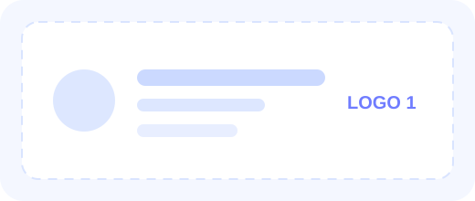
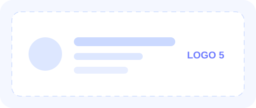

Para estudantes
Conteúdo acessível, inspirador e conectado às novas possibilidades de carreira no universo da computação quântica.
Universidade • inovação • tecnologia quântica
O UNISO Quantum Day 2026 reúne estudantes, pesquisadores, empresas e entusiastas de tecnologia para um dia de palestras, painéis, conexões e experiências voltadas ao ecossistema quântico.
Sobre o evento
Mais do que um evento técnico, o UNISO Quantum Day foi concebido como uma plataforma de divulgação científica e tecnológica. O site acompanha esse mesmo propósito: apresentar o evento com clareza, gerar interesse, facilitar inscrições e abrir espaço para apoiadores e patrocinadores.
Conteúdo acessível, inspirador e conectado às novas possibilidades de carreira no universo da computação quântica.
Visibilidade qualificada, associação com inovação de ponta e contato direto com talentos em formação e lideranças acadêmicas.
Divulgação de conhecimento, fortalecimento do ecossistema regional e promoção de um ambiente de troca entre academia e mercado.
Programação
A agenda foi organizada para oferecer uma experiência progressiva, com abertura institucional, talks, painéis, imersão, networking e mesa redonda.
Recepção do público no auditório do Bloco C.
Boas-vindas institucionais e início do evento.
Panorama da liga, da proposta e das frentes de atuação.
Pausa breve entre os conteúdos da manhã.
Conteúdo técnico com foco em inovação e aplicações.
Discussão sobre cenário, desafios e oportunidades.
Início da programação da tarde com ênfase em conexões.
Inovação, tecnologia e desenvolvimento de oportunidades.
Momento de destaque para a empresa apoiadora principal.
Experiência temática voltada à computação quântica.
Troca entre iniciativas e fortalecimento do ecossistema.
Conexão com instituições e iniciativas parceiras.
Espaço para relacionamento entre público, equipe e empresas.
Retomada da programação no período noturno.
Apresentação do computador quântico fotônico.
Discussão temática com foco em mercado e aplicações.
Debate ampliado com convidados e representantes.
Fechamento oficial do UNISO Quantum Day 2026.
Temas em destaque
A proposta editorial do site valoriza títulos e temas que ajudam o visitante a perceber relevância prática, oportunidade de carreira e impacto tecnológico.
Uma introdução estratégica sobre o impacto do quântico em diferentes setores.
Ambientes, ferramentas e cultura técnica que se conectam ao ecossistema quântico.
Conteúdo para transformar curiosidade em compreensão acessível e inspiradora.
Perspectivas de carreira para estudantes e oportunidades para empresas inovadoras.
Um olhar para iniciativas nacionais, formação de talentos e protagonismo regional.
Espaço para relacionamento entre academia, mercado, comunidade e apoiadores.
Patrocínio e apoio
Como ainda não há logos finais dos patrocinadores, o layout abaixo usa placeholders prontos para substituição. A seção foi pensada para funcionar bem tanto com poucos quanto com vários apoiadores.


Sugestão de uso: esta área pode ser dividida futuramente em Patrocinador Master, Apoiadores e Parceiros institucionais, conforme os logos oficiais forem definidos.
Inscrição
A inscrição será realizada em plataforma externa. Neste modelo inicial, deixamos um botão pronto para receber o link oficial assim que ele estiver disponível.
Local
Rodovia Raposo Tavares, km 92,5 — Sorocaba/SP.
O layout abaixo já reserva espaço para um mapa incorporado, instruções de chegada e informações adicionais para visitantes, apoiadores e equipe.
Abrir no mapaGaleria futura
O site já deixa prevista uma seção para fotos da edição de 2026, reforçando o valor institucional do evento e facilitando a divulgação posterior.